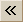
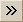
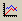
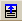
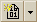
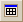
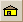

This topic descibes the buttons on the Chart Viewer toolbar.
The Chart toolbar has the following
properties:
|  | Returns to the previous chart. |
|  | Proceeds to the next chart. |
|  | Opens Chart Editor to edit properties. |
|  | Opens the Save Template As dialog. |
|  | Opens the Manage Template dialog. |
|  | Tiles charts. |
|  | Home view |
| Select a set of values from the drop-down menu to display in the
Display Viewer. |